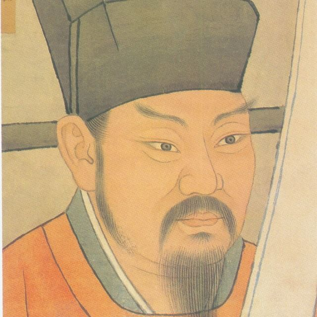

Lý Thường Kiệt

Giới thiệu
- Tên đầy đủ: Lý Thường Kiệt (chữ Hán: 李常杰)
- Thời gian sống: 1019 - 1105
- Xuất thân: Lý Thường Kiệt là một trong những vị tướng tài ba nhất của triều đại Lý, sinh ra trong một gia đình quý tộc ở vùng đất Nghệ An. Nhà của ông nối đời làm quan theo thức thế tập, tức là truyền chức này vĩnh viễn qua các đời, do đó có thể thấy gia đình của ông là một nhà quan lại có gốc gác bền vững. Từ nhỏ Lý Thường Kiệt đã tỏ ra là người có chí hướng và nghị lực, chăm học tập, rèn luyện cả văn lẫn võ, từng nghiên cứu về binh pháp.
Về Lý Thường Kiệt
Chiến Công Lịch Sử
Di sản
Lời cuối